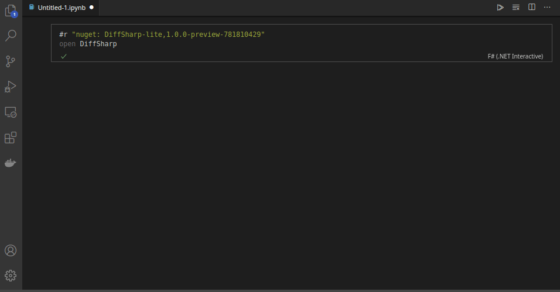

DiffSharp: Differentiable Tensor Programming Made Simple
DiffSharp is a tensor library with support for differentiable programming. It is designed for use in machine learning, probabilistic programming, optimization and other domains.
Key Features
🗹 Nested and mixed-mode differentiation
🗹 Common optimizers, model elements, differentiable probability distributions
🗹 F# for robust functional programming
🗹 PyTorch familiar naming and idioms, efficient LibTorch CUDA/C++ tensors with GPU support
🗹 Linux, macOS, Windows supported
🗹 Use interactive notebooks in Jupyter and Visual Studio Code
🗹 100% open source
Differentiable Programming
DiffSharp provides world-leading automatic differentiation capabilities for tensor code, including composable gradients, Hessians, Jacobians, directional derivatives, and matrix-free Hessian- and Jacobian-vector products over arbitrary user code. This goes beyond conventional tensor libraries such as PyTorch and TensorFlow, allowing the use of nested forward and reverse differentiation up to any level.
With DiffSharp, you can compute higher-order derivatives efficiently and differentiate functions that are internally making use of differentiation and gradient-based optimization.
Practical, Familiar and Efficient
DiffSharp comes with a LibTorch backend, using the same C++ and CUDA implementations for tensor computations that power PyTorch. On top of these raw tensors (LibTorch's ATen, excluding autograd), DiffSharp implements its own computation graph and differentiation capabilities. It is tested on Linux, macOS, and Windows, and it supports CUDA and GPUs.
The DiffSharp API is designed to be similar to the PyTorch Python API through very similar naming and idioms, and where elements have similar names the PyTorch documentation can generally be used as a guide.
DiffSharp uses the incredible F# programming language for tensor programming. F# code is generally faster and more robust than equivalent Python code, while still being succinct and compact like Python, making it an ideal modern AI and machine learning implementation language. This allows fluent and productive code for tensor programming.
Interactive Notebooks
All documentation pages in this website are interactive notebooks which you can execute directly in your browser without installing anything in your local machine.
Using the buttons 
 on the top of each page, you can execute the page as an interactive notebook running on cloud servers provided by Google Colab and Binder.
on the top of each page, you can execute the page as an interactive notebook running on cloud servers provided by Google Colab and Binder.
Using the buttons 
 you can also download a page as a script or an interactive notebook, which you can execute locally in Jupyter or Visual Studio Code using dotnet interactive.
you can also download a page as a script or an interactive notebook, which you can execute locally in Jupyter or Visual Studio Code using dotnet interactive.
Example
Define and add two tensors:
open DiffSharp
let t1 = dsharp.tensor [ 0.0 ..0.2.. 1.0 ] // Gives [0., 0.2, 0.4, 0.6, 0.8, 1.]
let t2 = dsharp.tensor [ 1, 2, 3, 4, 5, 6 ]
t1 + t2
|
Compute a convolution:
let t3 = dsharp.tensor [[[[0.0 .. 10.0]]]]
let t4 = dsharp.tensor [[[[0.0 ..0.1.. 1.0]]]]
t3.conv2d(t4)
|
Take the gradient of a vector-to-scalar function:
let f (x: Tensor) = x.exp().sum()
dsharp.grad f (dsharp.tensor([1.8, 2.5]))
|
Compute a nested derivative (checking for perturbation confusion):
let x0 = dsharp.tensor(1.)
let y0 = dsharp.tensor(2.)
dsharp.diff (fun x -> x * dsharp.diff (fun y -> x * y) y0) x0
|
Define a model and optimize it:
open DiffSharp.Data
open DiffSharp.Model
open DiffSharp.Compose
open DiffSharp.Util
open DiffSharp.Optim
let epochs = 2
let batchSize = 32
let numBatches = 5
let trainSet = MNIST("../data", train=true, transform=id)
let trainLoader = trainSet.loader(batchSize=batchSize, shuffle=true)
let validSet = MNIST("../data", train=false, transform=id)
let validLoader = validSet.loader(batchSize=batchSize, shuffle=false)
let encoder =
Conv2d(1, 32, 4, 2)
--> dsharp.relu
--> Conv2d(32, 64, 4, 2)
--> dsharp.relu
--> Conv2d(64, 128, 4, 2)
--> dsharp.flatten(1)
let decoder =
dsharp.unflatten(1, [128;1;1])
--> ConvTranspose2d(128, 64, 4, 2)
--> dsharp.relu
--> ConvTranspose2d(64, 32, 4, 3)
--> dsharp.relu
--> ConvTranspose2d(32, 1, 4, 2)
--> dsharp.sigmoid
let model = VAE([1;28;28], 64, encoder, decoder)
let lr = dsharp.tensor(0.001)
let optimizer = Adam(model, lr=lr)
for epoch = 1 to epochs do
let batches = trainLoader.epoch(numBatches)
for i, x, _ in batches do
model.reverseDiff()
let l = model.loss(x)
l.reverse()
optimizer.step()
print $"Epoch: {epoch} minibatch: {i} loss: {l}"
let validLoss =
validLoader.epoch()
|> Seq.sumBy (fun (_, x, _) -> model.loss(x, normalize=false))
print $"Validation loss: {validLoss/validSet.length}"
Numerous other model definition, differentiation, and training patterns are supported. See the tutorials in the left-hand menu and examples on GitHub.
More Information
DiffSharp is developed by Atılım Güneş Baydin, Don Syme and other contributors, having started as a project supervised by the automatic differentiation wizards Barak Pearlmutter and Jeffrey Siskind.
Please join us on GitHub!
<summary> Tensor operations </summary>
static member DiffSharp.dsharp.config: configuration: (DiffSharp.Device * DiffSharp.Dtype * DiffSharp.Backend * DiffSharp.Printer) -> unit
static member DiffSharp.dsharp.config: ?device: DiffSharp.Device * ?dtype: DiffSharp.Dtype * ?backend: DiffSharp.Backend * ?printer: DiffSharp.Printer -> unit
module Backend from DiffSharp
<summary> Contains functions and settings related to backend specifications. </summary>
--------------------
type Backend = | Reference | Torch | Other of name: string * code: int override ToString: unit -> string member Name: string
<summary> Represents a backend for DiffSharp tensors </summary>
<summary> The reference backend </summary>
<summary> Represents a multi-dimensional data type containing elements of a single data type. </summary>
<example> A tensor can be constructed from a list or sequence using <see cref="M:DiffSharp.dsharp.tensor(System.Object)" /><code> let t = dsharp.tensor([[1.; -1.]; [1.; -1.]]) </code></example>
type MNIST = inherit Dataset new: path: string * ?urls: seq<string> * ?train: bool * ?transform: (Tensor -> Tensor) * ?targetTransform: (Tensor -> Tensor) * ?n: int -> MNIST override item: i: int -> Tensor * Tensor member classNames: string[] member classes: int override length: int
--------------------
new: path: string * ?urls: seq<string> * ?train: bool * ?transform: (Tensor -> Tensor) * ?targetTransform: (Tensor -> Tensor) * ?n: int -> MNIST
<summary>The identity function</summary>
<param name="x">The input value.</param>
<returns>The same value.</returns>
<example id="id-example"><code lang="fsharp"> id 12 // Evaulates to 12 id "abc" // Evaulates to "abc" </code></example>
type Conv2d = inherit Model new: inChannels: int * outChannels: int * ?kernelSize: int * ?stride: int * ?padding: int * ?dilation: int * ?kernelSizes: seq<int> * ?strides: seq<int> * ?paddings: seq<int> * ?dilations: seq<int> * ?bias: bool -> Conv2d override ToString: unit -> string override forward: value: Tensor -> Tensor member bias: Tensor member weight: Tensor
<summary>A model that applies a 2D convolution over an input signal composed of several input planes</summary>
--------------------
new: inChannels: int * outChannels: int * ?kernelSize: int * ?stride: int * ?padding: int * ?dilation: int * ?kernelSizes: seq<int> * ?strides: seq<int> * ?paddings: seq<int> * ?dilations: seq<int> * ?bias: bool -> Conv2d
static member dsharp.flatten: input: Tensor * ?startDim: int * ?endDim: int -> Tensor
static member dsharp.unflatten: input: Tensor * dim: int * unflattenedShape: seq<int> -> Tensor
type ConvTranspose2d = inherit Model new: inChannels: int * outChannels: int * ?kernelSize: int * ?stride: int * ?padding: int * ?dilation: int * ?kernelSizes: seq<int> * ?strides: seq<int> * ?paddings: seq<int> * ?dilations: seq<int> * ?bias: bool -> ConvTranspose2d override ToString: unit -> string override forward: value: Tensor -> Tensor member bias: Tensor member weight: Tensor
<summary>A model that applies a 2D transposed convolution operator over an input image composed of several input planes.</summary>
--------------------
new: inChannels: int * outChannels: int * ?kernelSize: int * ?stride: int * ?padding: int * ?dilation: int * ?kernelSizes: seq<int> * ?strides: seq<int> * ?paddings: seq<int> * ?dilations: seq<int> * ?bias: bool -> ConvTranspose2d
type VAE = inherit VAEBase new: xShape: seq<int> * zDim: int * encoder: Model * decoder: Model -> VAE override ToString: unit -> string override decode: z: Tensor -> Tensor override encode: x: Tensor -> Tensor * Tensor
<summary>Variational auto-encoder</summary>
--------------------
new: xShape: seq<int> * zDim: int * encoder: Model * decoder: Model -> VAE
static member dsharp.tensor: value: obj * ?device: Device * ?dtype: Dtype * ?backend: Backend -> Tensor
type Adam = inherit Optimizer new: model: Model * ?lr: Tensor * ?beta1: Tensor * ?beta2: Tensor * ?eps: Tensor * ?weightDecay: Tensor * ?reversible: bool -> Adam override updateRule: name: string -> t: Tensor -> Tensor
<summary>TBD</summary>
--------------------
new: model: Model * ?lr: Tensor * ?beta1: Tensor * ?beta2: Tensor * ?eps: Tensor * ?weightDecay: Tensor * ?reversible: bool -> Adam
<summary> Print the given value to the console using the '%A' printf format specifier </summary>
module Seq from DiffSharp.Util
<summary> Contains extensions to the F# Seq module. </summary>
--------------------
module Seq from Microsoft.FSharp.Collections
<summary>Contains operations for working with values of type <see cref="T:Microsoft.FSharp.Collections.seq`1" />.</summary>
<summary>Returns the sum of the results generated by applying the function to each element of the sequence.</summary>
<remarks>The generated elements are summed using the <c>+</c> operator and <c>Zero</c> property associated with the generated type.</remarks>
<param name="projection">A function to transform items from the input sequence into the type that will be summed.</param>
<param name="source">The input sequence.</param>
<returns>The computed sum.</returns>
<example id="sumby-1"><code lang="fsharp"> let input = [ "aa"; "bbb"; "cc" ] input |> Seq.sumBy (fun s -> s.Length) </code> Evaluates to <c>7</c>. </example>
© Copyright 2021, DiffSharp Contributors.